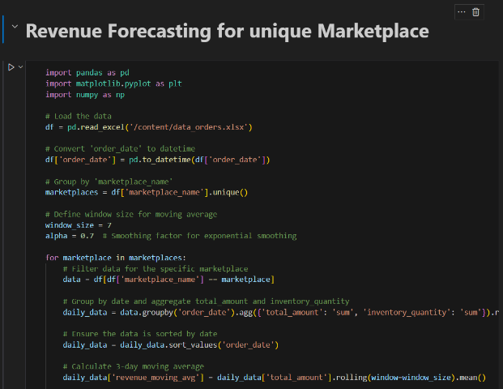
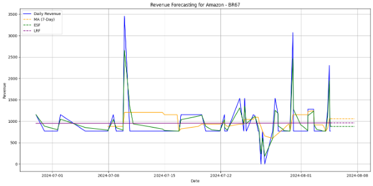
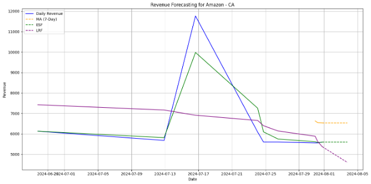
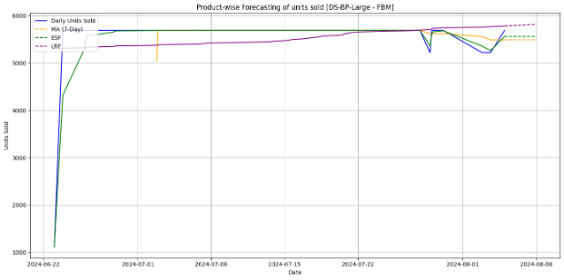
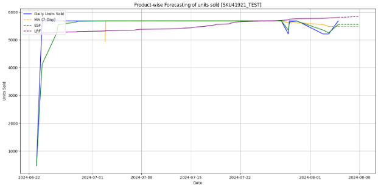
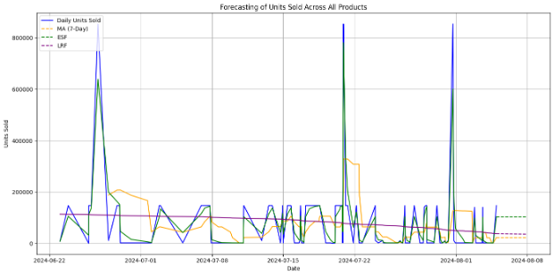

Marketplace Revenue & Unit Sold Forecasting
Multi-Method Time-Series Analysis for Business Intelligence
Forecasting Visualizations

System Interface

Revenue Forecast 1

Revenue Forecast 2

Revenue Forecast 3

Revenue Forecast 4

Unit Forecast 1

Unit Forecast 2
Comparative Analysis Results
The project delivered a comprehensive, comparative forecasting tool, illustrating the trade-offs between models:
- Moving Average provided the smoothest curve, effectively filtering out noise but lagging behind sharp changes
- Exponential Smoothing was the most responsive to recent changes due to the higher smoothing factor
- Linear Regression offered a clear long-term direction, useful for setting overall expectations
The final output included concrete 3-day revenue forecasts for every unique marketplace, providing immediate and actionable insights for business stakeholders.